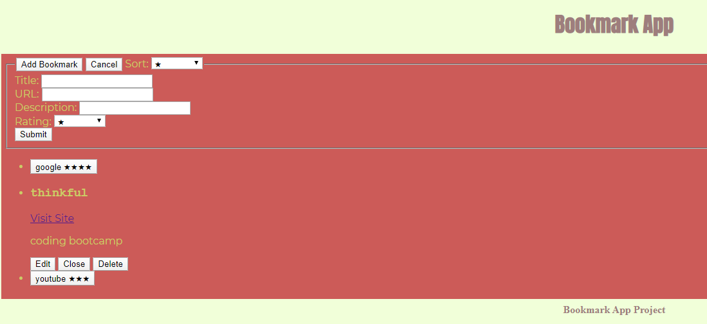
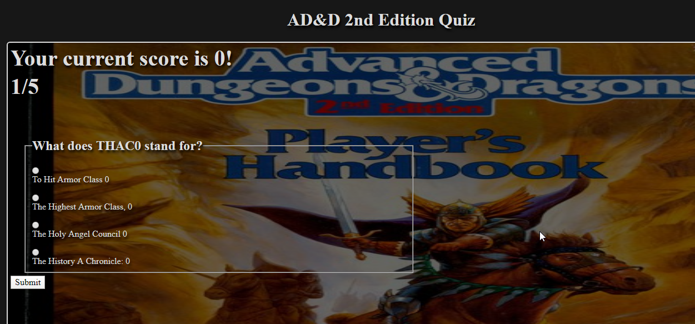

Hi! I'm Agatha North! I hope you're here to hire me!
About Me
In my opinion it's important to embrace one's good and bad. Following this principle has never served me wrong, so I will continue to practice it professionally. Admitting to and being honest about both your strengths and your weaknesses not only builds a relationship on a foundation of truth, but it also serves as a better aid for seeing if someone fits into a team or on a specific project. We can sell ourselves all day, but without this element of truth I see hiring as a guessing game. So with all that in mind, here I am;
The Good
I'm always creating.
Whether it's coding and designing, writing, or preparing content for one of my dungeons and dragons games, I spend my days making things. I was always the kid who would come out of a toystore with new LEGOs or K'NEXs and frustrate my parents by opening it up and building in the car. I moved onto writing as a teenager, and eventually found a deep love of roleplaying games, which remain my primary hobby to this day. This thrist for creation brought me into the field of design and code.
I'm punctual.
Even if it isn't the most flashy of strengths, I personally value it to the highest degree. In all walks of life, perpetually late people stand out in a bad way. I think of my time as an extention of everyone's time that I'm working or interacting with each day, and strive to never waste my peers precious efficiency by showing up late. I do everything in my power to apply this to deadlines as well, making room for potential snags and issues.
The Bad
I have a high opinion of myself.
I'm not quite a narcissist, but I do have an ego. I'm not proud of it, but it's something I've always struggled with internally. I've gotten quite good at suppressing this aspect of myself, and try to regularly humble and ground my ego to keep in check. I value self growth, and my ego is my main blocker for it. I do feel I've become a stronger person over the years, in spite of this shortcoming, and I continue to work on tempering myself.
I'm disinterested in social media
While I'm sure many would agree with this statement and not see it as a negative, I know that this line of work tends to favor people who can maximize their exposure while simultaniously networking. I just can't seem to reconcile with it, as hard as I've tried! It vexes me!
Projects
Bookmark App
GH Repo Link
A webapp intended to help users keep a collection of useful bookmarks!
Quiz App
GH Repo Link
A webapp that tests your knowledge about an old edition of D&D! The most useful kind of knowledge!
Contact Me
- Rouborn@gmail.com
- ANorth Github
- ANorth Linkedin
Skills
- Quiz App
- HTML
- CSS
- JS
- Github
- Bookmark App
- HTML
- CSS
- JS
- Github
- React